Microsoft Office PowerPoint 2016.
Get a sample copy of
the textbook. This way we can at least access the book index. Some people do have the physical book.
Download this exam study guide. It's a good source of information for the 77-729 exam.
And yet another summary. Useful and to the point guide.
Visit the GCFLearning website. A great resource. Worth taking a look at it.
Visit the YouTube GCFLearning channel. It has very easy to follow tutorials.
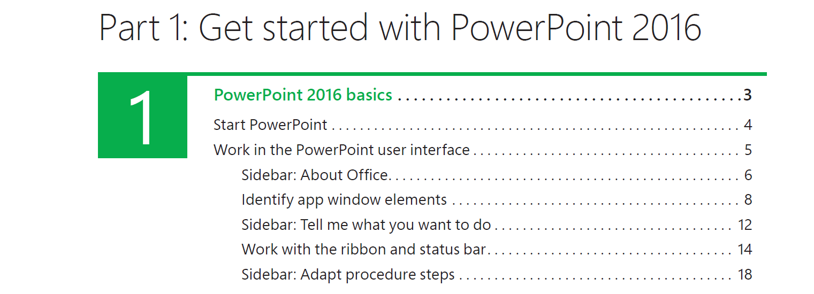
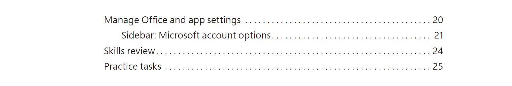
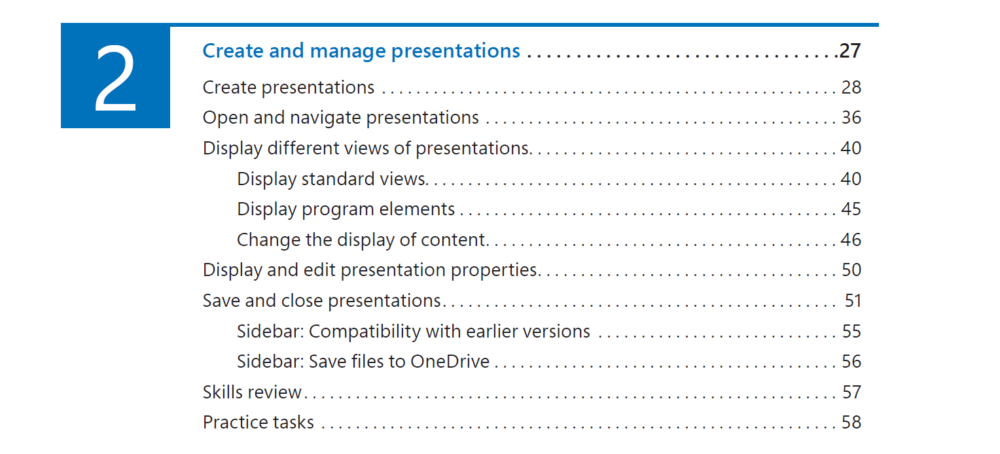
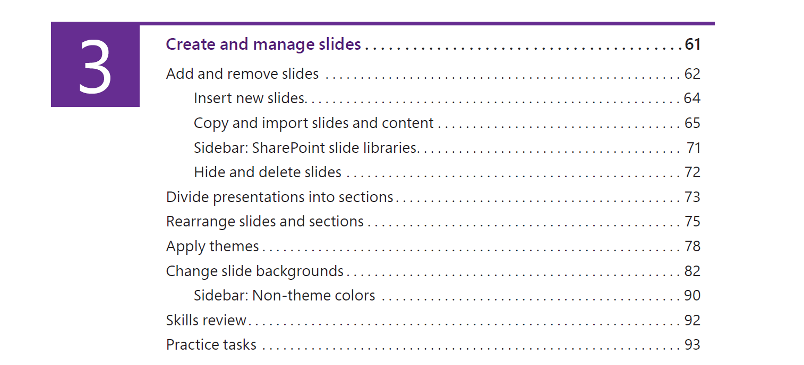
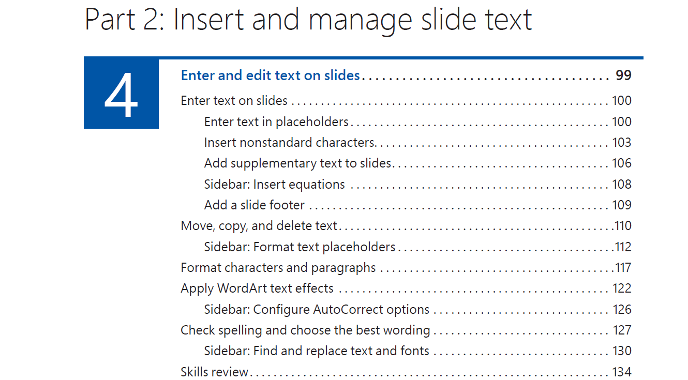
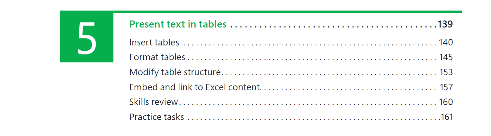
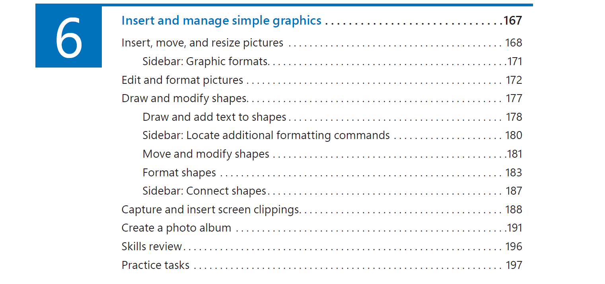
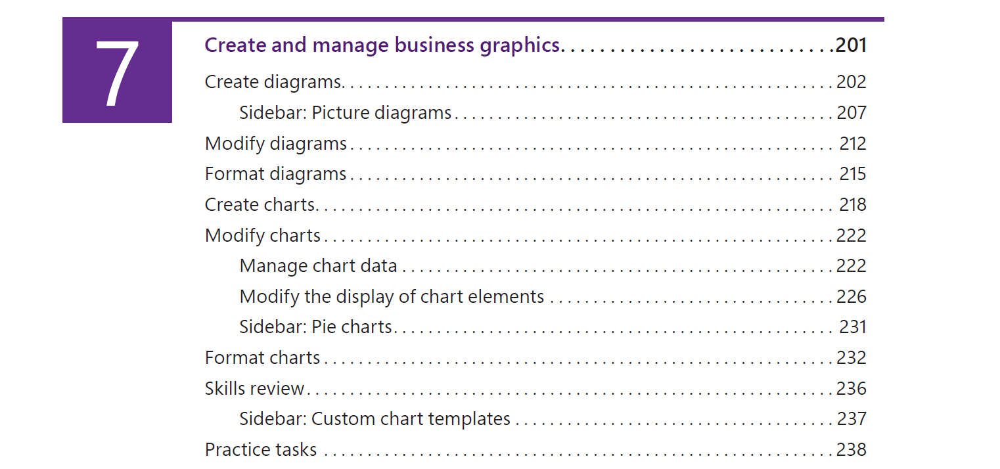
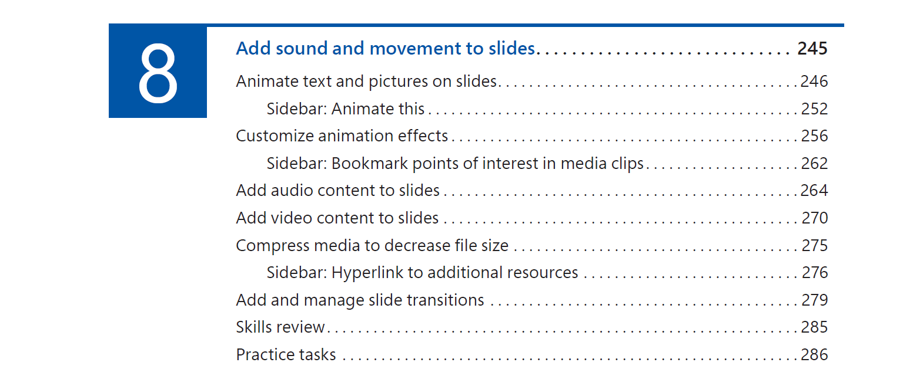
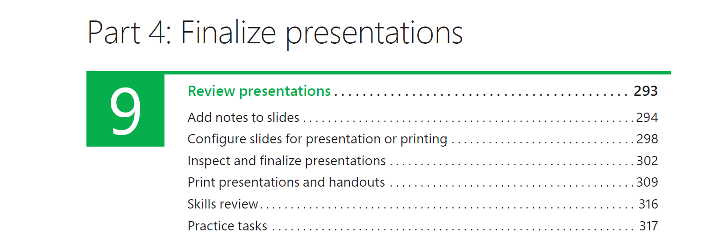
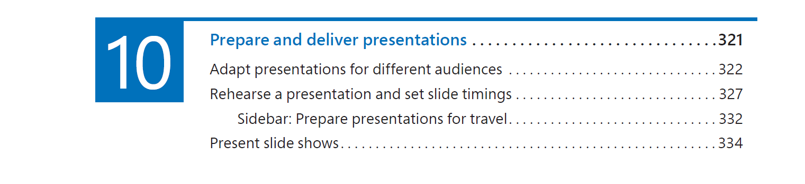
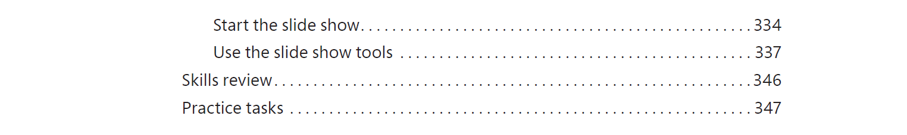
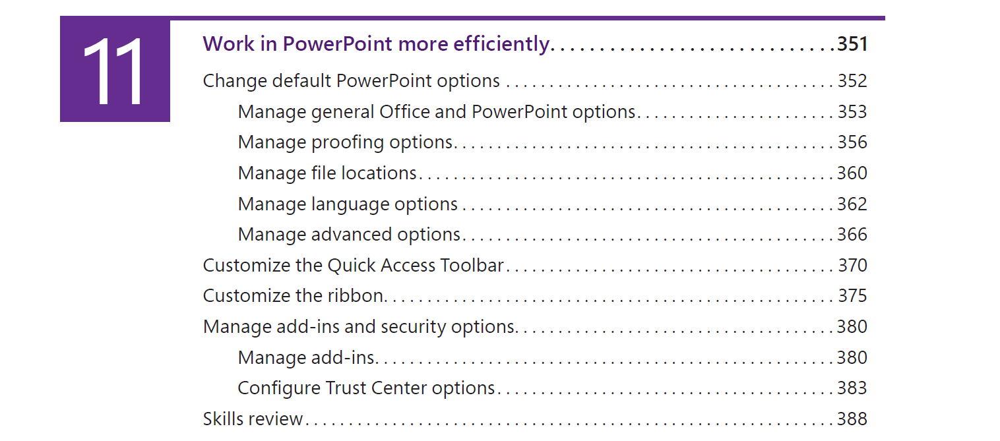
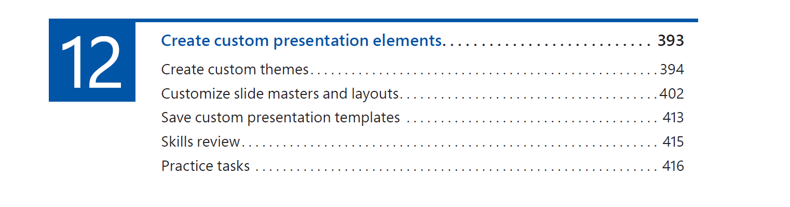
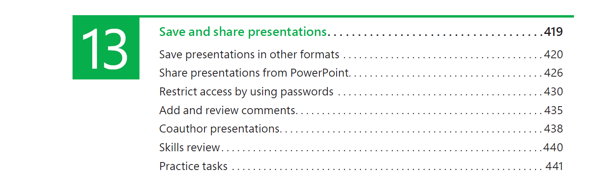
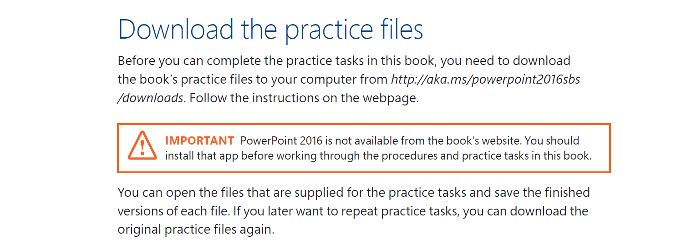
Additional PowerPoint Exercises